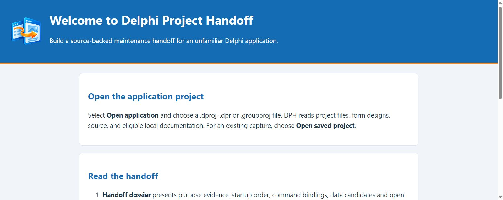
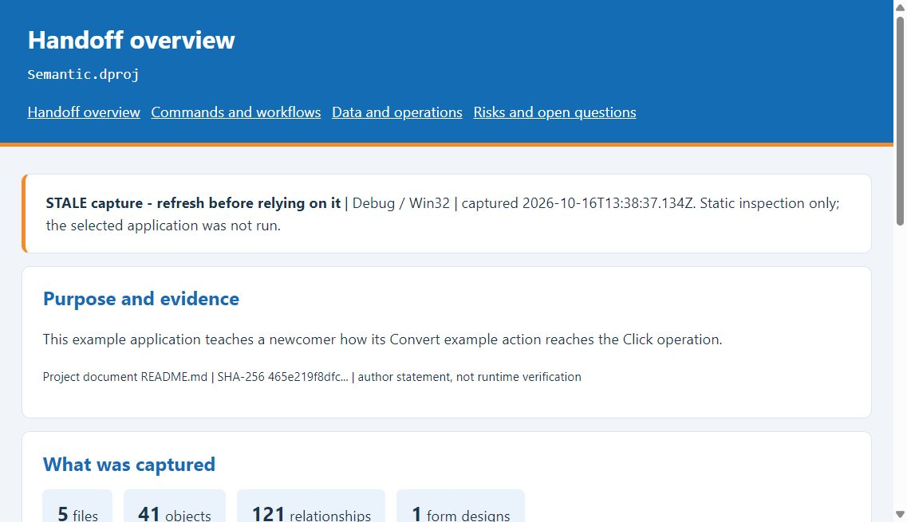
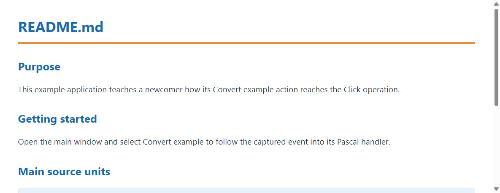
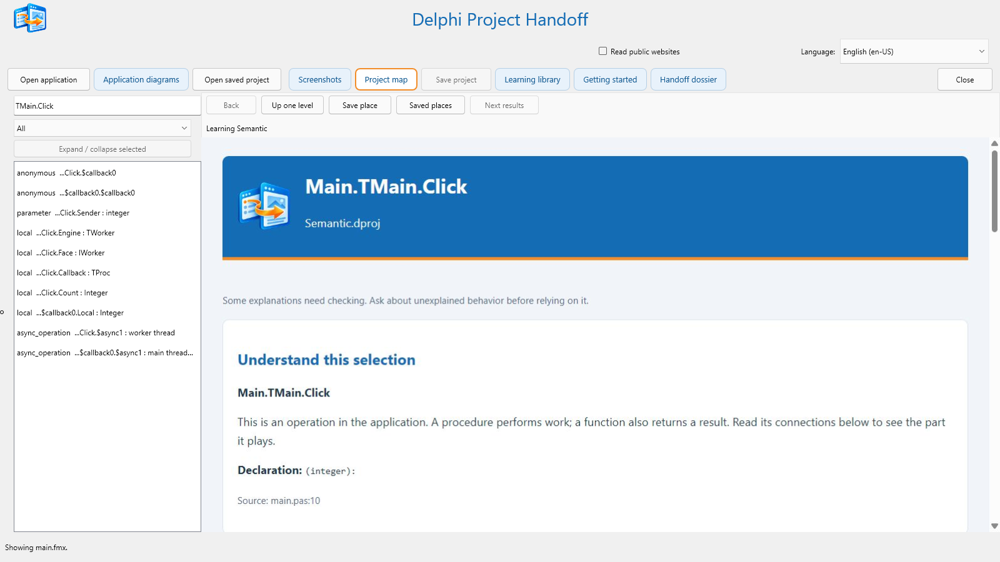

Guide edition 48 last changed 16 October 2026
Delphi Project Handoff, or DPH, prepares an evidence-based handoff for an unfamiliar Delphi application. It reads a selected .dproj, .dpr, or .groupproj and related Pascal units, saved forms, project-local guides, notes, and logs. DPH does not compile, run, or modify the selected application.
Begin with the Handoff dossier. It distinguishes source and document evidence from suggestions about where to read next, then links startup forms, visible commands, data candidates, and unresolved questions to the underlying capture. DPH cannot establish every business rule, permission, runtime state, or outcome. Treat a proposed relationship in an application diagram as a route to investigate, not proof that an action occurred.
The public experiment offers two ZIP files: a ready-to-run Windows package and a separate editable Delphi source distribution. Neither is an installer. For the Windows package, extract the whole ZIP and run the Win64 executable, or Win32 if needed. To build from source, open DelphiProjectHandoff.dproj in RAD Studio 37, build Win32 or Win64, and keep the project resources in place. The WebView2 Runtime is needed for formatted pages; WebView2Loader.dll must be beside the executable.
The User Guide explains the visible app. The Engineering Guide explains its implementation and validation. DPH's original code and documentation are licensed under Apache 2.0; bundled dependencies have separate terms listed in THIRD_PARTY_NOTICES.md.
The header contains Open application, Open saved project, Close, the Read public websites checkbox, the language selector, and six tabs: Getting started, Handoff dossier, Learning library, Project map, Screenshots, and Application diagrams. The status line reports when project preparation is under way or complete. The selected language changes DPH's interface offline. The German choice also offers an experimental local translation of selected English project prose; original files, code identifiers, citations, and form captions remain unchanged. Some project-derived prose and technical labels may remain in their original language; the 35 interface packs cover DPH-authored controls and guidance.

If you already have a .dphdb, click Open saved project. Opening the saved file restores its captured findings and managed images; it does not automatically re-run the target application.
A project may have no helpful guide, no saved form, or code that the analyzer cannot resolve. DPH should show the available evidence and mark uncertain conclusions. A missing document or diagram connection is not evidence that the target application lacks that behavior. Ask someone familiar with the application when its purpose or operating rules cannot be established from files.
Handoff dossier has four parts. Handoff overview reports capture status, a documented or reviewed purpose when available, startup form registrations, saved form designs, and a suggested reading tour. Commands and workflows lists clickable control events with their connected handlers. Data and operations shows static data and output candidates. Risks and open questions collects author questions and analyzer diagnostics. Each item must be checked against its cited source before being used as an operating instruction.

Figure 2 shows an incomplete example capture. Its timestamp records when DPH read the files; it is not an expiration date. In this build, STALE capture can also mean syntax or semantic analysis is incomplete. For a live project, choose Open saved project with the original source available, or choose Open application and select the same project entry. Wait for verification or analysis, then revisit the dossier. If the warning persists, inspect diagnostics and missing inputs. Restore an inaccessible file and reopen the project; unsupported constructs and unresolved connections may remain qualified after a fresh scan.
Static inspection only remains after every refresh because DPH never runs the selected application. Startup registration does not prove which window first appeared, and a saved event binding does not prove its handler ran. Use source links and project documents to check the dossier; DPH does not invent a business purpose when none was found.
A linked form or control opens the relevant view or selection. Use Back to return to the preceding selection, Up one level to move to a containing object, Save place to remember a location, and Saved places to revisit it. Next results advances when another page of object results is available. These commands navigate findings; they are not steps in the selected application's task.
The left pane groups starting topics, discovered documents, and screens. Choose an item to read its formatted content in the right pane. A document found in more than one location has a location selector; each location retains its own content and source path. Search the list by title or relevant text when many entries are present.

Document discovery stays within the selected project's directory. DPH samples a bounded set of eligible guides, help files, notes, and logs. PDF, older Word, RTF, and similar formats require LibreOffice at its standard Windows installation path for text extraction. DOCX and supported text formats are read directly. If a file has no usable text, the library says so rather than presenting an empty page. Scanned image-only PDFs may require OCR elsewhere before DPH can read them.
All 35 interface language packs work offline. German additionally has a bundled experimental English-to-German model for selected project prose in Handoff dossier and Learning library. It runs locally, may make translation mistakes, and does not alter the original files or saved evidence. Other language choices and unmarked project content remain in the source language. DPH-authored memo directions use the installed interface language packs; project-derived prose and technical labels can still appear in their source language. Technical names, code and citations stay as written.
Read public websites starts unchecked. When you enable it, the next analysis may fetch limited text from up to three eligible public HTTPS pages cited in selected project documents. DPH does not offer a general web search. Leave the checkbox off for a local-only project read; changing it does not retroactively remove evidence from a saved analysis. Each fetched response is capped at 128 KiB. DPH rejects local-looking hosts and privately resolved IPv4 addresses, pins each request to its checked public address, uses no proxy, and does not follow redirects. If Windows cannot apply address pinning, the request is skipped. This optional feature requires Windows 10 21H1 or later.
Project map lists captured units, types, objects, controls, procedures, functions, variables, and related items. Filter the left list, expand a unit, and select an item to see its type, declaration, source, and connections. Some relationships are inferred or unresolved; read the explanation and source reference before relying on them.

Screenshots creates a blank screen image for each distinct supported .fmx or .dfm form definition when you open the page. DPH saves these views beside the .dphdb. Use Fit to see a complete view or Native pixels to inspect detail. These are design-time reconstructions, not photographs of the target application running. Custom painting, styles, data, and runtime layout may differ.
Application diagrams show possible form navigation, routine calls, information paths, or dependencies found in project files. Choose a diagram type and read its explanation above the drawing. Select a box to inspect the represented object. Blue solid arrows are direct file connections; orange dashed arrows need interpretation. A limited drawing may omit nodes or arrows, so use a focused selection or another grouping when the larger diagram is crowded.
Keep the .dphdb and adjacent .dphdb.views folder together. Click Open saved project and select the database. Confirm the project name, library topics, and generated screens. If source files have moved or changed, an old capture may be incomplete; verify links against the current source before treating them as current.
If Handoff dossier says STALE capture, follow the verification steps in section 3.1. Open saved project checks available attached source in the background; Open application selects the source entry again. A fresh scan may still be marked incomplete when the analyzer cannot establish every connection. The phrase Static inspection only always remains because DPH never runs the selected application. If formatted pages are blank, check that Microsoft WebView2 Runtime is installed and WebView2Loader.dll is beside the DPH executable. If a PDF or older word-processing file has no text, install LibreOffice in its standard Windows location and reopen the application project. If a form view is approximate, inspect the actual .fmx or .dfm and remember that runtime painting is outside this generator's evidence.
If a project takes longer than expected, watch the preparation message for the current stage. Large source trees, office-document conversion, and referenced HTTPS sites can add time. DPH limits the document scan and does not require Internet access to open the project.
Open Sharing and choose Export handoff. Select a new destination folder; DPH will not overwrite an existing edition. Click Preview handoff to inspect its opening page. The portable edition starts with handoff-0.html and has four linked dossier pages, a technical index, source-linked object explanations, and the earlier learning edition at learning.html. Share the whole folder, not an individual HTML page, after reviewing its scope, source citations, author claims, images, and any sensitive material. Validation hashes detect changes relative to the captured manifest; they do not authenticate the author.
Optional translation requires an internet connection. Product and code names retain their original spelling.